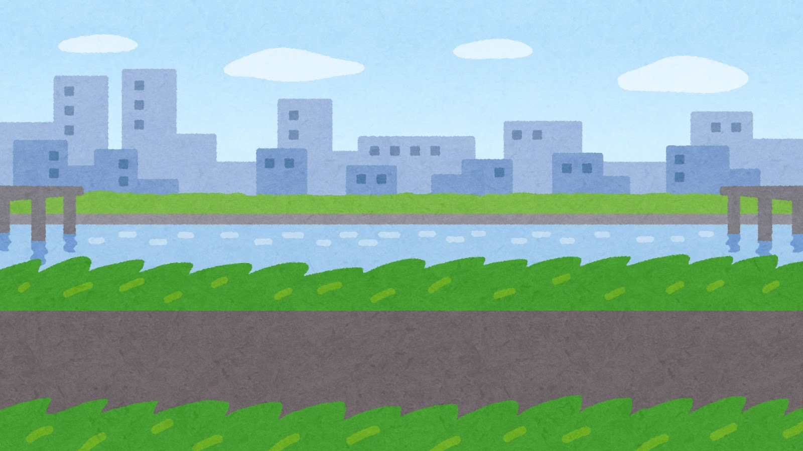

いたずら
子ども会
ですよ
猛暑に照らされる夏も寒風吹きすさぶ冬も 鴨川河原で元気に遊んでいます



いたずら子ども会は京都大学公認「京都大学ユネスコ学生クラブ」が運営する、
子ども達と遊ぶことを主目的として活動している団体です。
毎週土曜日2時から鴨川河原で鬼ごっこなどをして遊んでいます。
2、3ヵ月毎に子どもたちと一緒に遠足に行ったりもします。
毎週土曜日14:00から17:00まで（冬季は16:30まで）、丸太町橋西詰めの鴨川河原で
幼稚園年少から小学6年生あたりの子どもたちと遊んでいます。
ドッヂボールや鬼ごっこ、お絵かきやおままごとなどをしています。
夏場は鴨川に入って水遊びをすることもあります。
2,3ヵ月に一度遠足に行きます。過去には京都水族館や大阪市立科学館に行ったり、
船岡山公園や宝ヶ池公園でレクリエーションをしたりしました。冬にはクリスマスパーティーもします。
すべて学生が企画しており、子どもたちが楽しく安全に過ごせるように心がけています。
遠足にはどらごん、じゃりんこ子ども会の学生も参加し、楽しく交流しています。